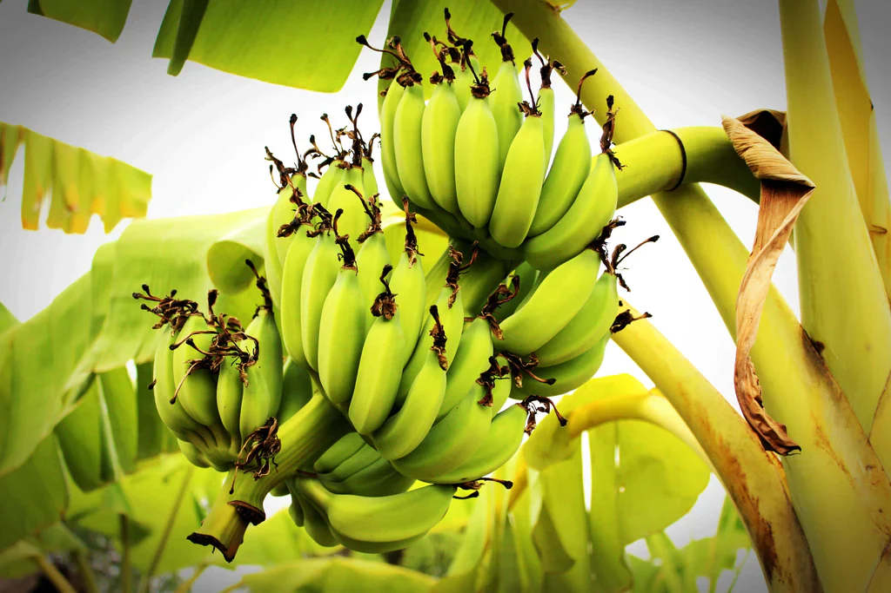

Banana
Best Banana Farm Practices: Grows well in temperature range of 13ºC – 38ºC with RH regime of 75-85%. Pit planting is commonly followed in the garden land system of cultivation. Pits of 60 cm x 60 x 60 cm x 60 cm size are dug, filled with a mixture of soil, sand and FYM (Farmyard Manure) in a 1:1:1 ratio. Suckers are planted in the center of the pit and soil around is compacted.Irrigate immediately after banana planting. Give a light Subsequent irrigation after planting. Stop irrigation during rainy days.
Best Fertilizers for Banana Farms: Application of micro-nutrient like Zn, Mn, Fe,are found to improve yield and quality of bunch. Two applications of micro-nutrient (with a commercial preparation) consisting of Zn (0.1%), Mn(0.1%) and Boron (0.005%) are to be given in the third and fifth month.Apply fertilizer 5-8 cm. below the soil surface by gentle digging in ring fashion.
Pest Management for Banana Farms: Continue intermittent foliar sprays of insecticides, fungicides and soil application of pesticides right from the initial establishment of plants in the field to keep the aphids and insects away.Uproot the diseased (Virus or other) plants along with the suckers and roots, burn them outside the field.
Best Storage for Banana: Bunches attain maturity from 100-150 days after flowering depending on variety.Harvest the bunch and give a top cut to the plant leaving the Pseudostem as such so that the nutrients in it leach down and are available to young plant left for first ratoon (if to be taken).Don’t cut the Pseudostem from base as it is a common practice of the farmers.